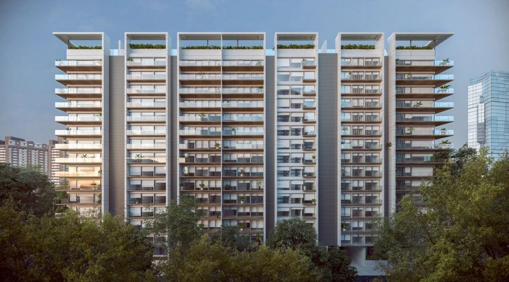
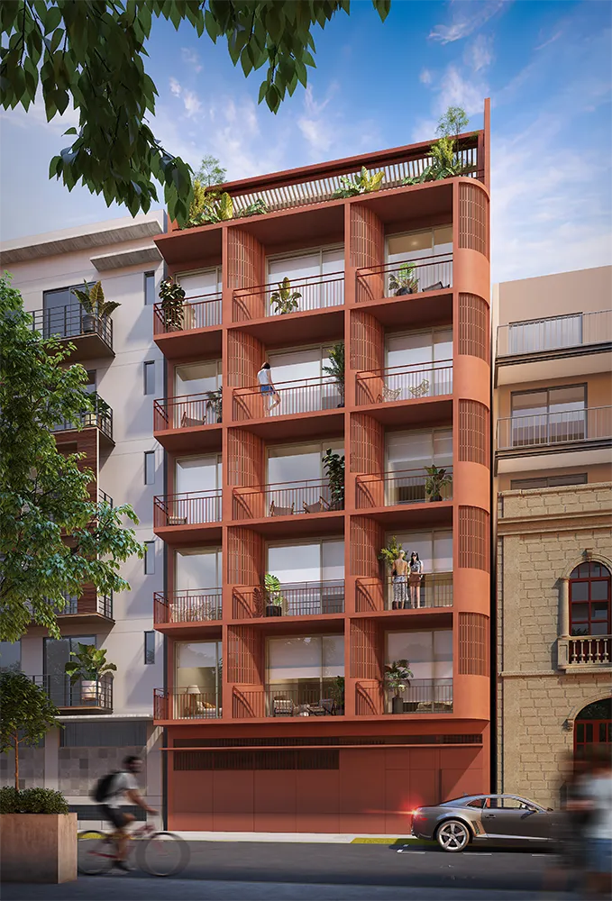
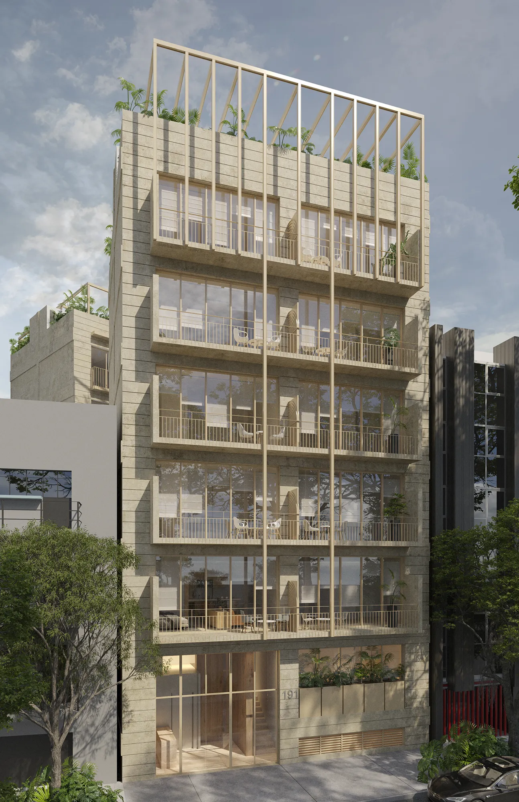

"Con Arquitectoma no solo hacemos campañas — construimos la máquina de ventas detrás de cada lanzamiento."
Arquitectoma es una de las desarrolladoras inmobiliarias más ambiciosas de México. Desde Chapultepec Uno — operado por Ritz Carlton — hasta Torres Bioparque y Río Papaloapan 19, cada proyecto exige una estrategia de medios construida desde cero: audiencias distintas, precios distintos, mercados distintos.
Chapultepec Uno, en Av. Reforma con operación Ritz Carlton, apunta a compradores de ultra lujo nacionales e internacionales. Taman Condesa y Sepia Condesa hablan a un perfil lifestyle urbano. Torres Bioparque y HighTowers Puebla operan en mercados regionales con dinámicas completamente diferentes. Máxica y Río Papaloapan 19 tienen sus propios perfiles de comprador, precios y estacionalidades.
El reto no era hacer publicidad — era construir un ecosistema de adquisición de leads que funcionara simultáneamente para proyectos tan distintos, con presupuestos eficientes y métricas claras en tiempo real para el equipo de ventas de cada desarrollo.
Para cada desarrollo diseñamos una estrategia independiente: definición de buyer persona, segmentación en Google Ads y Meta Ads, configuración de Pixel y eventos de conversión, landing pages de alta conversión, flujos de CRM y reportería en Looker Studio. Todo en sincronía con el equipo de ventas de Arquitectoma.
La operación es mensual y continua: auditamos campañas, ajustamos segmentos, optimizamos creativos y presentamos resultados. Con Chapultepec Uno iniciamos la relación; desde ahí vinieron Forma Reforma, Taman Condesa, Sepia Condesa, HighTowers Puebla, Torres Bioparque Residencial, Torres Bioparque Oficinas, Máxica y Río Papaloapan 19.
Pasa el cursor sobre cada pantalla para recorrerla.


